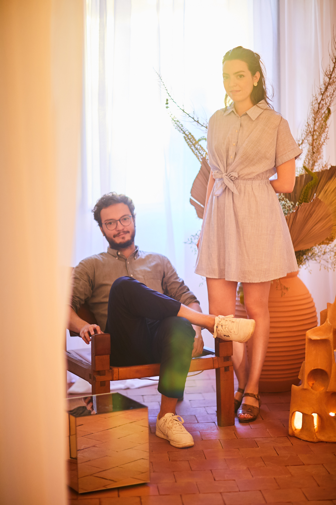

Diplomés de l'école Camondo en 2015 avec les félicitations du jury, Kim Haddou et Florent Dufourcq vivent et travaillent à Paris.
Le rêve et l'esprit des lieux comme points de départ à chacun de leurs projets, leur travail laisse une grande place à l'imaginaire et au pouvoir de l'évocation.
Selectionnés en 2018 par la Villa Noailles pour le concours Design Parade Toulon, ils reçoivent le Grand Prix du Jury Van Cleef and Arpels pour "Grotto", une petite pièce d'inspiration méditérranéenne exposée tout l'été dans l'ancien évêché de la ville.